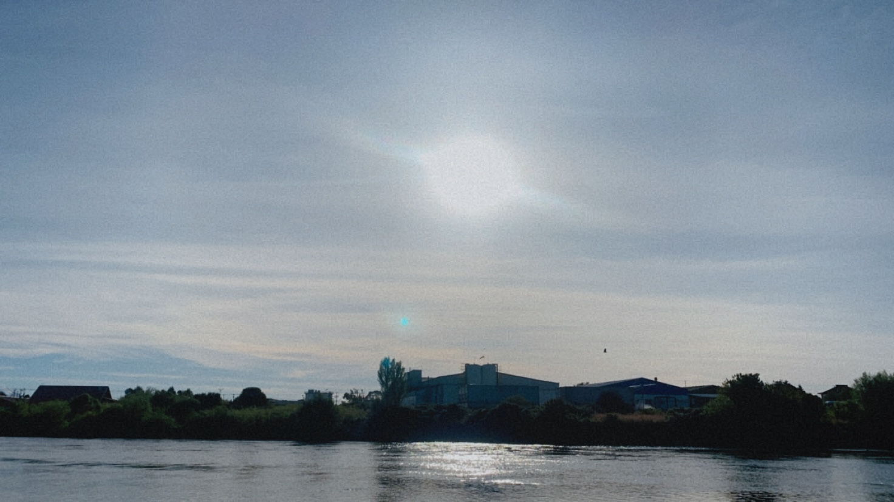
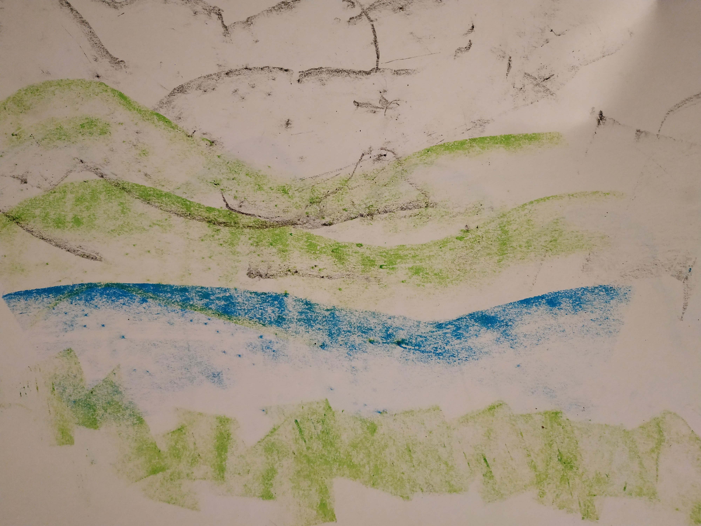

cuaderno de campo
-
texto
diversos modos de vida del río Maullín: pesca ribereña, estuarina y marina, recolección de ribera y de orilla, marisca, buceo, agricultura de subsistencia y cultivo de pelillo. Mediante estas prácticas, la biodiversidad se integra en la historia
humana, transformando a árboles, peces, plantas, hongos, aves, moluscos, mamíferos, en co-habitantes del mundo (Haraway, 1995; Skewes, 2019)
-
Ficha técnica
- dia 25 de abril
- hora 13:65
- ubicacion el rio de lava
- modalidad teledirigido
- tipo de lente 50 dioptrias
- temperatura 45°C
-
Imagen

-
Mapa
 -
Audio
-
Sedimento
Contenido